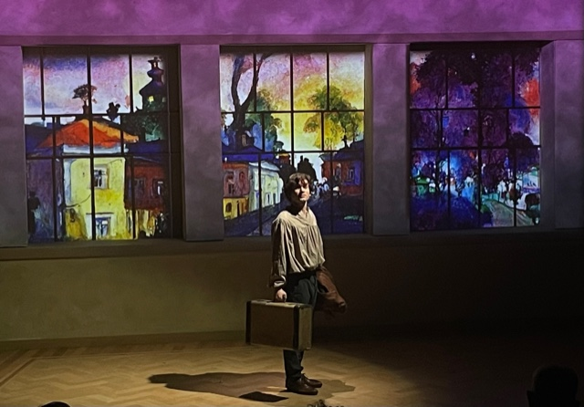
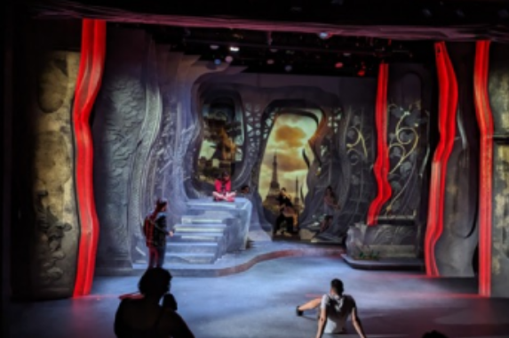
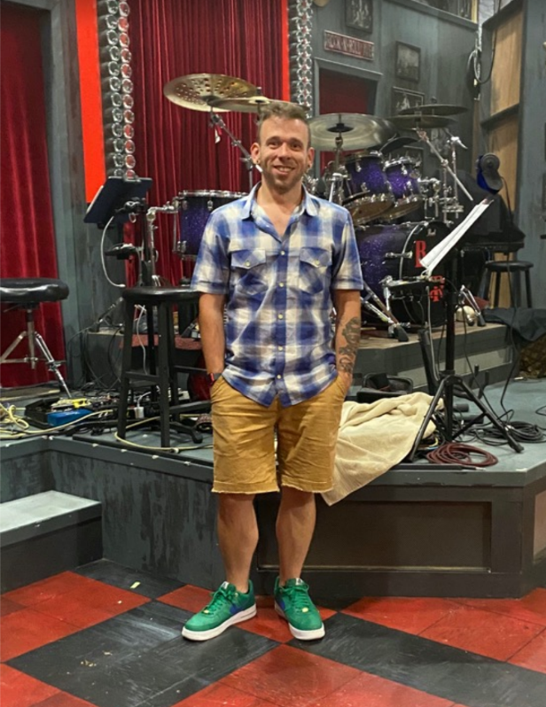
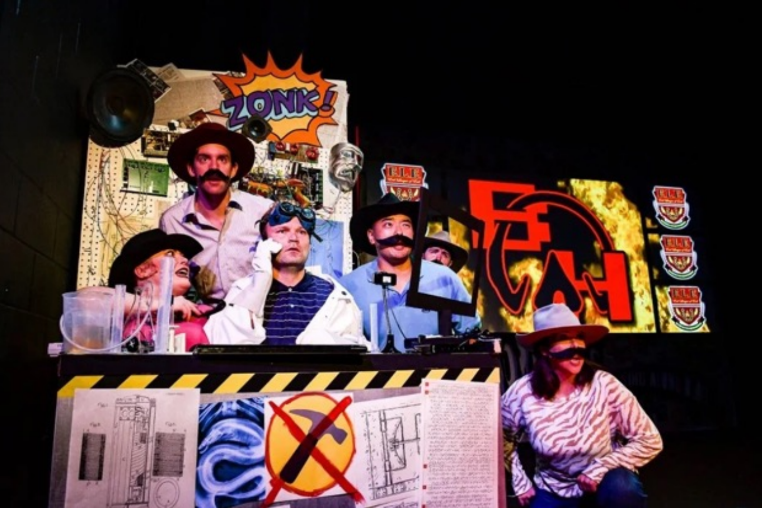
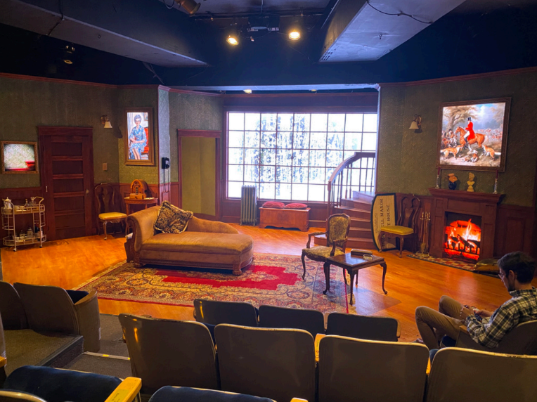
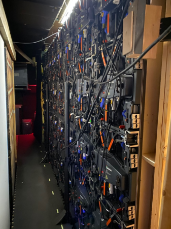
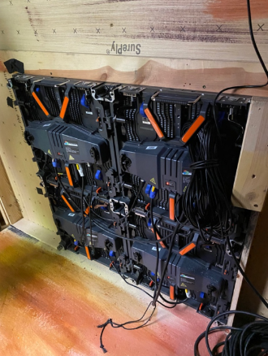

The Austrian Alps, a Roman Catholic nunnery, the streets of Florence – these are just a few of the exotic locales seen within the past year on Chicago theater stages. No, plaster mountains were not built on stage nor were leaded glass windows or Renaissance shop windows installed. You, the audience, is transported around the world by one of the theater’s most useful devices, the video projection.
Ever since ancient peoples noticed that a fire could cast a shadow image on a cave wall, the idea of creating projected visual images has intrigued us. Jump forward a few tens of thousands of years to the 4th century BCE in China when the principle of the “Camera Obscura” or pinhole camera was first recorded. By the 17th century, the magic lantern had evolved using candles and lamps to show images using the new technology of lenses. Electricity, then movies, and now computer-controlled video opened new options. Today digital technology has raised the projected image to new levels of realism or abstraction as desired.
Projections were not recognized as a separate award category by the Jeff Committee until 2017, when a total of eight productions were nominated. Winners were Anthony Churchill, “The Body of an American,” Stage Left Theatre; and Mike Tutaj, “Objects in the Mirror,” Goodman Theatre. Projections are now commonplace in productions both large and small.
For some playwrights, however, projections are still a new tool. Jim Sherman, author of “Chagall at School,” (and Jeff Committee member) has only just begun to appreciate how projections can enhance his work. “Because I was writing about Mark Chagall, I knew there were specific references to his works and to other artists. In readings, I just got enlarged pictures and put them on poster boards…what I didn’t know, if you’d have a projection designer and a really good one, she comes up with other things to do. Designer Erin Peake filled up the world of the play in ways I never imagined.”
Jim Sherman
For “Chagall in School,” she used the windows in the classroom set to display both the outside world and various paintings as mentioned in the play, neatly giving Jim what he needed. She also won a Jeff Award for her work. You might imagine that this could reduce the cost of the set, but projections do not necessarily ease the cost. “They exploded the budget,” Sherman related.

“Chagall in School”
Budget is a serious consideration. Large theaters may invest in their own projection equipment for $30,000 and up, but small theaters need to rent. Projection specialists frequently own their own equipment and therefore have a revenue stream, separate from their fee. And sometimes, they will donate the projectors. “If it’s important enough, I’ll put stuff that’s my own into the production,” says Romanian-born projectionist Liviu Pasare.
Pasare studied painting and drawing at the School of the Art Institute. In his first year there, “the environment made me realize how technology is used in creating art…I found the medium very appealing to me,” he said. “It was immediate and my work was amplified.” After graduating, he worked with an improv group, the now-closed Redmoon Theater, and Collaboraction, exploring the integration of art, production and technology. He found the theater world creative and welcoming; he liked the interaction with actors and art.
Liviu Pasare
Like many projection specialists, Pasare pursues a variety of projects that include not only theater but also art installations in museums and galleries, and environments for dance companies. Pasare was nominated for the Jeff Award for Projection in 2022 for Teatro Vista’s “Somewhere Over the Border” and is nominated again this year with Reese Craig for Raven Theater’s “Right to Be Forgotten.” His projections for Teatro Vista’s “The Dream King” supported the 2023 Jeff-nominated lighting and set designs. “I just want the set to do the best it can,” he said. He always asks himself, “Does it [a projection] help tell the story? Is there another way to do it with existing stuff?”

“The Dream King”
Like Pasare, Max Maxin did not start out doing projections. He developed set design skills as a student at the Actors Training Center in Wilmette. He still creates sets and more often designs lighting, but a production’s need for video is when his name frequently comes up. “People are diving more into what it [projection] can be. Originally it was a lot of very, very simple things,” he said. Ten years ago, the technical process of rendering images, for example, took much longer and made it hard to make last minute edits. “It’s now simple, fast and accessible.”
Maxin’s credits include projections for Black Button Eyes Productions of “Dr. Horrible’s Sing-Along Blog” at the Edge Theater and Kolkandy’s “Sweeney Todd” at the Chopin Theater. His experience is often being called for at the last minute. “The nice thing about projection is that I can get ahead of the game and do the prep [on my computer} at home. Lighting you have to do in the space.”
To use projection, a theater needs a projector and a screen, just like your home movies. But the projector(s) needs to be carefully positioned in front of the set, usually hung above the audience (for front projection) or set up behind the set (for rear projection). “A lot of times the space will limit what you can get away with,” said Maxin. Whether one uses rear and/or front projection depends on how much backstage area exists for actors to move and the blocking of the actors on the set to avoid stepping in front of the projected image.

Max Maxin IV

Scene from “Dr. Horrible’s Sing-Along Blog”
An issue can be the director’s inexperience with projections. “A lot of directors may initially look at the tech requirements and say ‘Oh, there’s a screen in this show. Where is that screen going?’” Maxin, on the other hand, understands how flexible projection can be. “I can cut out any picture and I can move it any way I want. It’s absolutely limitless what I can do with video. I just picture so many options. There’s literally no boundary,” he said. “Once the director is on board with projections, and we can figure out what it’s saying, I’ll reshape the entire show to match.”
Budget issues range dramatically. Since many theaters can’t invest in their own projectors, Maxin realized owning his own projectors made sense. “Kokandy Productions needed two projectors for “Sweeney Todd;” I had two in warehouses for them to use. The “Sweeney Todd” budget’s line item was just $1000. For a larger theater, the cost could be $25,000 for rental alone. Maxin handled this production himself. At a larger theater he might have a team of several technicians.
The newest technology to enhance the set electronically is technically not a projection and is far more costly. Computer controlled LED panels can be used at any scale in any setting and are used extensively in New York and Hollywood productions, sports stadiums, industrial trade shows, and other venues to provide photo-realistic environments. They offer maximum realism, and eliminate the space considerations for a rear projector and placement issues with front projectors. The Citadel, a midsize Equity theater in Lake Forest, has no room for a rear projector and little budget even for front projectors. Thanks to a family connection, the theater has been able to experiment with $90,000 in LED panels at no cost for two productions, last year’s “The Christians” and this year’s “The Mousetrap.”

Set of “The Mousetrap” with five LED panel elements: a mirror, a woman’s portrait, a large window with snow falling, a hunting scene painting, and a fire burning in a fireplace. Approximately 80 individual panels were installed.
Pangaea Technology, a California-based manufacturer of state-of-the-art LED panels, provided the hardware and software that effectively brought falling snow and a blazing fireplace to “The Mousetrap” set. Videos were integrated to show a skier through the window approaching the manor house through the snow and to change the wall paintings to show individual suspects as the murder mystery unfolded. Most dramatic was a splash of blood that appeared to hit the window just as a knife was plunged into the second victim. The complex wiring and supporting piping required little backstage space and still allowed just enough room for the actors to cross over to the opposite side of the stage unseen. Scott Westerman, the director, was delighted to have the new technology, “I had so much fun seeing what was possible!”
 LED panels for large central window |
 LED panels for the fireplace |
Audience impact? “I want to be not noticed,” said Maxin. “I think of it [projection] as the icing on the cake. They say about lighting design, you don’t leave the show singing the lighting, you leave singing the song.” In the same way, the role of projections in theaters is to enhance the director’s vision for the production. You don’t want the audience to leave singing a projection “melody.” In the case of “The Mousetrap,” however, one shivered for the actor trudging through the snow and happily enjoyed the warmth of the fire inside.